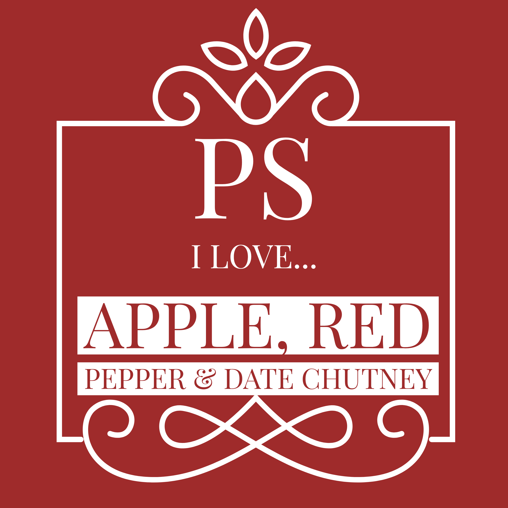

Award winner and family favourite.
Give it try and see what you think.
Give it try and see what you think.
Traditional "Roll Royce" of the
chutneys (with an additional kick!)
chutneys (with an additional kick!)
Lovely subtle chutney with more
delicate flavours.
delicate flavours.
Inspired by Nigel Slater's recipe,
a twist on a classic.
a twist on a classic.


Delicately spiced chutney crammed with fresh apricots with warming chilli and tumeric.
The real deal! Traditional
seville Marmalade.
seville Marmalade.
Can be eaten as a breakfast jam.
Also great in sponges or on scones.
Also great in sponges or on scones.
The addition of the rhubarb enhances the flavour of the strawberries
without being too sickly or sweet.